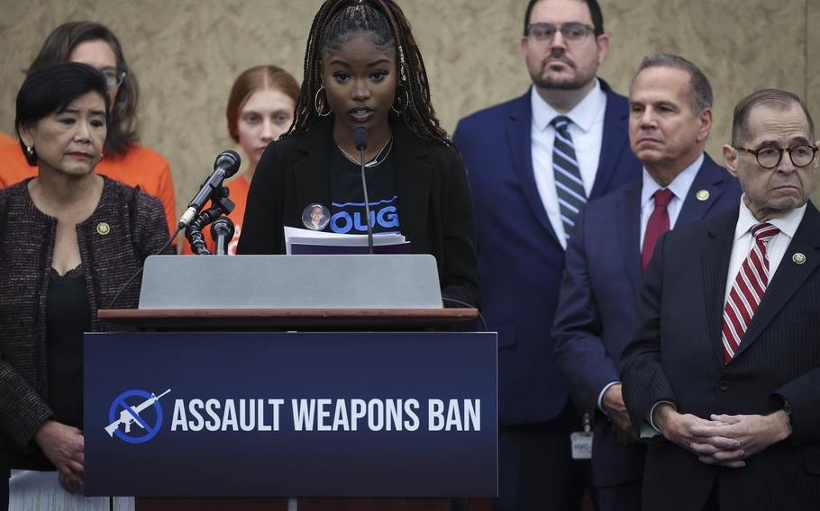
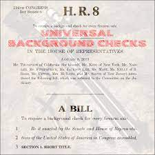
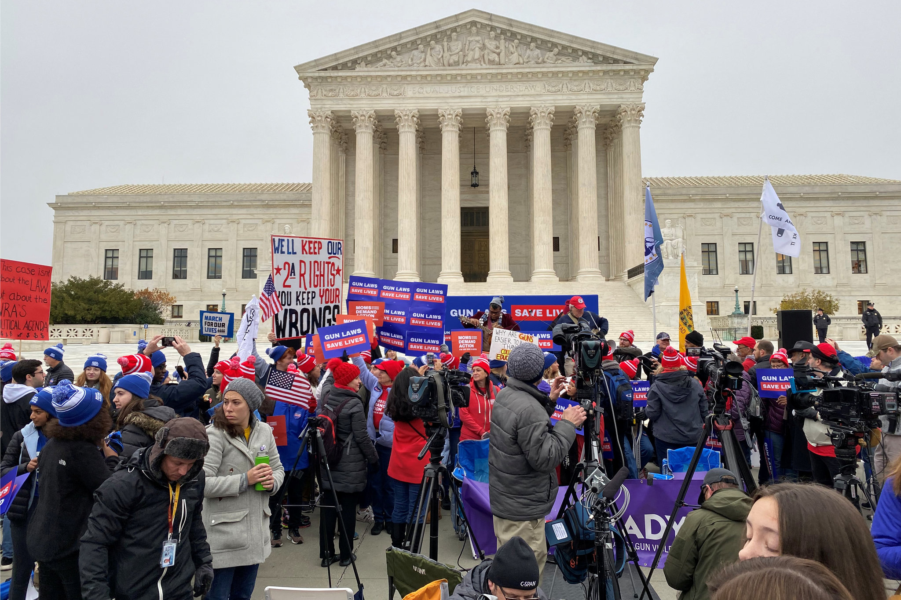
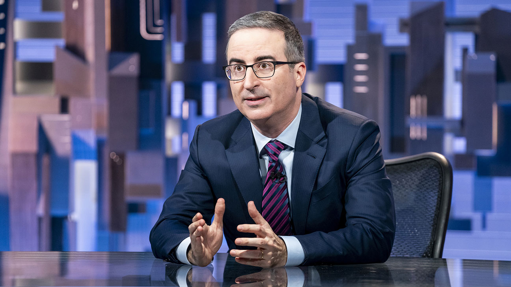

Gun Control Legislation
Gun control legislation is a hot topic in the news. Stay up-to-date with the latest developments.
- Lawmakers in washington state have passed a bill that would prohibit the sale, manufacture and import of assault weapons in the state."Both chambers of the Washington State Legislature have now approved a historic ban on the sale of assault weapons in Washington state," Washington Attorney General Bob Ferguson said in a press release Saturday shortly after Democrats in the state Senate successfully pushed through H.B. 1240."The Senate today put public safety above the interest of the gun lobby," Ferguson added. "The devastation of mass shootings extends far beyond the casualties and injuries. Mass shootings traumatize entire communities. We must stop selling these weapons of war in Washington."The assault weapon ban passed the Senate by a vote of 27-21 and will now head back to the House since it was amended in the Senate. The bill will then go to the desk of Washington's Democratic Gov. Jay Inslee who is expected to sign it.
- Nine months ago, President Joe Biden signed a sweeping bipartisan gun law, the most significant legislative response to gun violence in decades."Lives will be saved," he said at the White House.The law already prevented some potentially dangerous people from owning guns. Yet since that signing last summer, the tally of mass shootings in the United States has only grown.Five dead at a nightclub in Colorado. Eleven killed at a dance hall in California. Three 9-year-olds and three adults shot and killed at an elementary school in Nashville, Tennessee.A day after that school shooting, Biden's tone was markedly less optimistic than it was the signing ceremony."What in God's name are we doing?" he asked in a speech last Tuesday, calling for a ban on so-called assault weapons like those that were used to kill at The Covenant School in Nashville. "There's a moral price to pay for inaction."
- The Supreme Court said on Monday that it would review a longstanding New York law that imposes strict limits on carrying guns outside the home, setting the stage for its first major Second Amendment decision in more than a decade - and the first to be decided by the court's newly expanded conservative majority.The move came after a recent spate of mass shootings, which were followed by calls from President Biden and other Democrats for stricter restrictions on firearms. Scholars who study gun rights said a ruling striking down the New York law could undermine those efforts and have broad national implications."The ruling will profoundly impact the number of guns legally carried on the streets of New York, Los Angeles and Boston," said Adam Winkler, a law professor at the University of California, Los Angeles, and the author of "Gunfight: The Battle Over the Right to Bear Arms in America."
-  John Oliver used the opening segment of Sunday's Last Week Tonight to weigh in on the tragic event that took place in Tennessee last month, when three kids and three adults were killed in a school shooting.Following the tragedy at Covenant School, a private elementary school in a Nashville suburb, on March 27, young activists took to the state Capitol to protest "the lack of response from the legislature while engaging in some catchy chants concerning Governor Bill Lee," Oliver noted, before showing footage of the protesters repeatedly chanting, "Fuck Bill Lee!"